LLMdesignervideo
Layouts, terrain and 3D assets are authored, or reconstructed into something renderable.
Building a social-navigation simulator normally means building a world: layouts, terrain, 3D assets, and a pedestrian model that decides how people behave. We skip the world. An ordinary monocular walking video is converted directly into the policy's own state space — a metric traversability map plus the pedestrian trajectories actually recorded on that street — and that is enough to train a closed-loop policy.
Overview video
Video pipeline, replay simulator, Arena transfer, and the Go2 deployment.
Motivation
Social-navigation policies are trained in simulation, because learning them on real robots is costly and potentially unsafe. But the simulators themselves are expensive in two independent ways, and each caps a different kind of diversity:
The obvious fix — reconstruct real scenes from video — replaces the artist with a reconstruction, but keeps the expensive part. Gaussian splats, generated assets and neural renderers all have to render counterfactual observations: the moment the robot steps off the recorded camera path, the simulator must synthesise what it would have seen. Dynamic social scenes make this worse, since people now need appearance models and motion models too.
hours per scene · renders every step
4.5 min per 20 s clip · never renders
Layouts, terrain and 3D assets are authored, or reconstructed into something renderable.
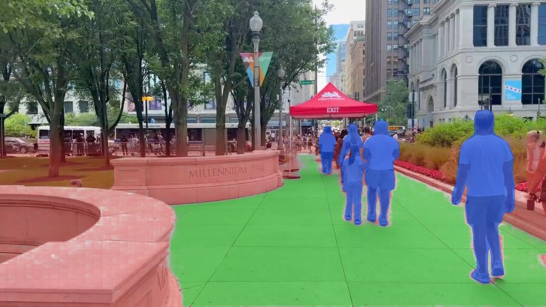
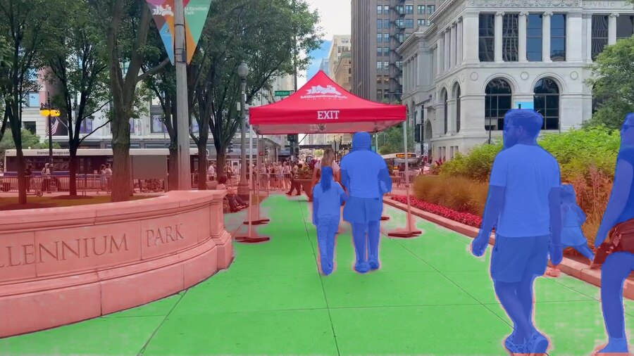
An ordinary monocular walking video. Nothing else.
A 3D scene plus scripted people, whose behavior is whatever the chosen model produces.
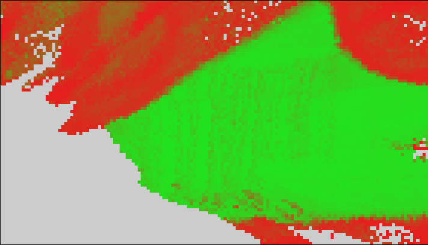
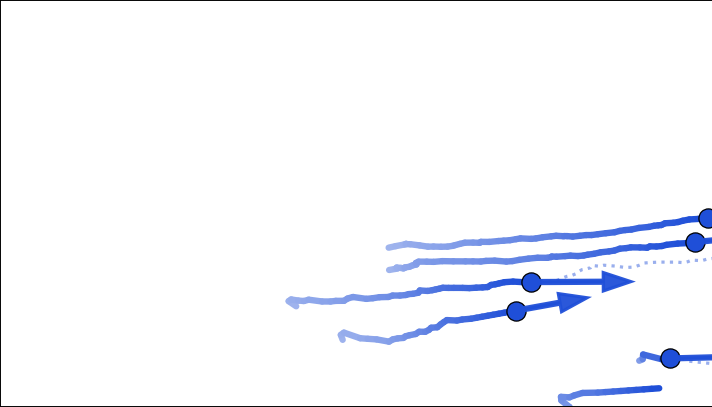
A metric traversability map and the trajectories people actually walked.
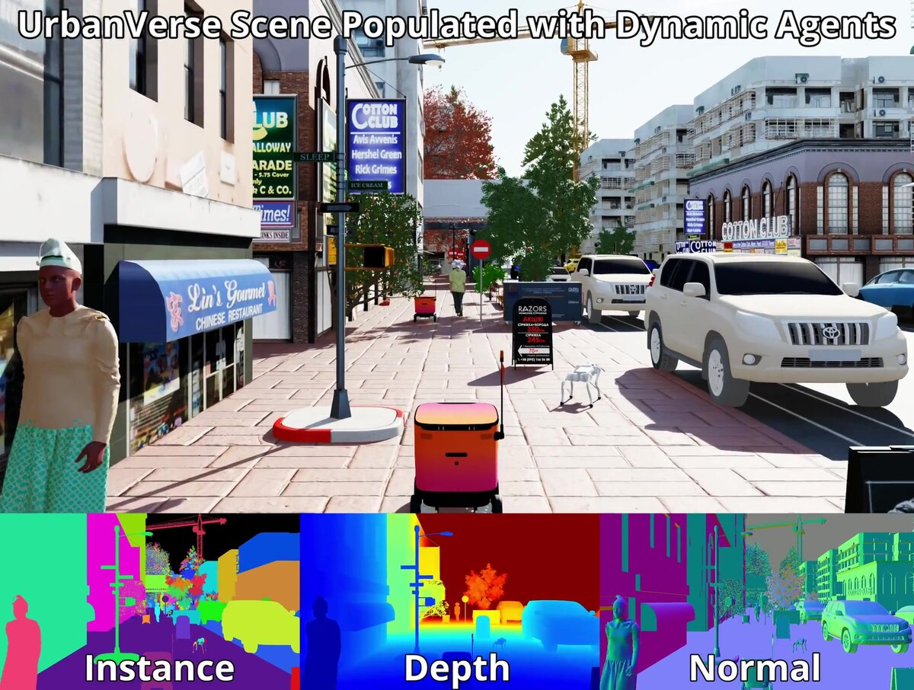
Rendered pixels — re-synthesised for every counterfactual robot pose.
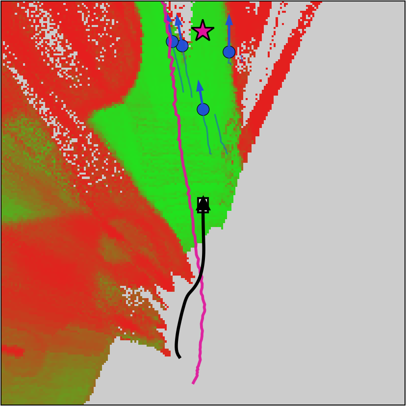
The robot-frame state itself — a rigid transform away, at any pose.
Key idea
Local social navigation depends on two things: where the robot can traverse and how nearby pedestrians move. Both are geometric. Neither needs appearance. So instead of reconstructing a scene that can be rendered, we recover only those two quantities and define the simulator's forward dynamics directly on them.
That choice is what makes counterfactual robot motion cheap, because each layer transforms in a way that needs no model:
| Layer | What it holds | Under counterfactual robot motion |
|---|---|---|
| Static | Gravity-aligned metric traversability map, accumulated causally | A rigid transform into the new robot pose — exact, no rendering |
| Dynamic | Time-indexed pedestrian states (x, y, vₓ, v_y) | Replayed at the video's own clock — real speeds, crossings and crowd patterns, no behavior model |
World time follows the recording; the robot pose evolves independently from the policy's velocity commands. The two only interact when the recorded state is transformed into the robot's current frame — which is defined for any pose. So the robot can stop, turn, or leave the demonstrator's path entirely and still observe a consistent world state.
Method
Every stage below runs on ordinary 4K walking-tour footage with pretrained perception models. One 20 s clip (200 frames at 10 fps) takes 4.5 minutes on a single A100.
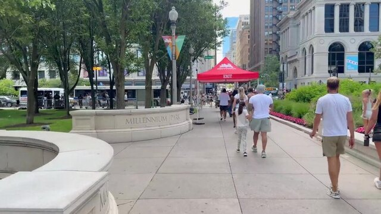
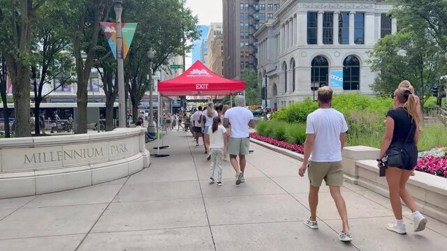
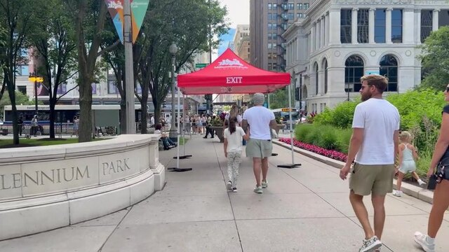
First-person 4K walking tours. The only input.
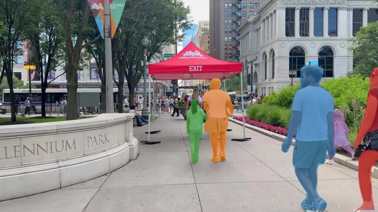
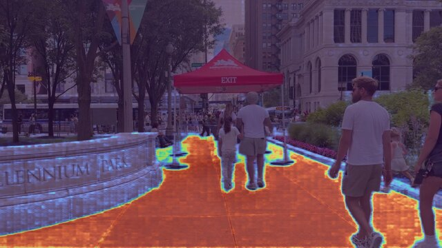
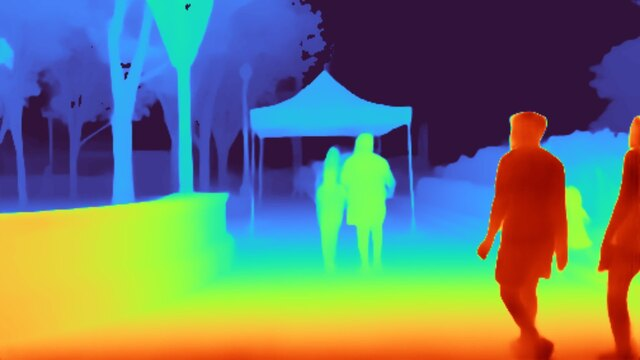
People (YOLO11 + BoT-SORT), walkability (SAM-TP) and metric depth + camera poses (Depth Anything 3), fused into a gravity-aligned world frame.
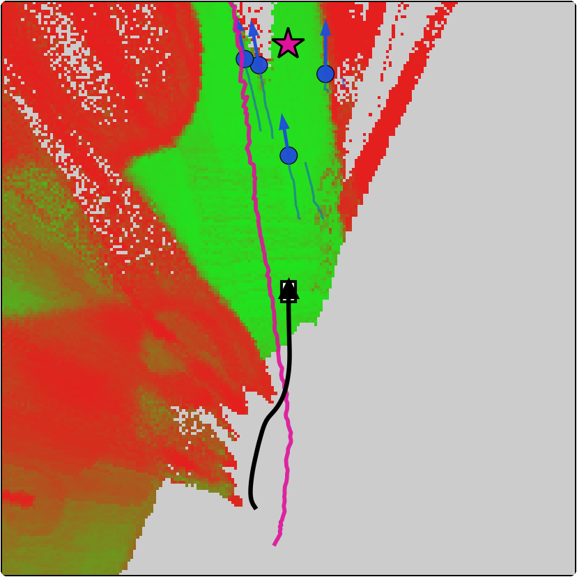
World time follows the recording; the robot pose integrates from the policy's command with a unicycle model. Map and people are transformed into the robot frame each step.
180 angular cone tokens + up to 20 pedestrian tokens + goal + previous action. RoPE on the cone tokens only; pedestrian tokens stay permutation-invariant.
Trained with PPO from scratch in the replay simulator — 32 parallel environments, reward on goal progress with collision termination.
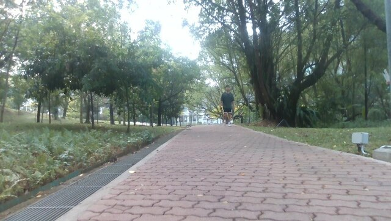
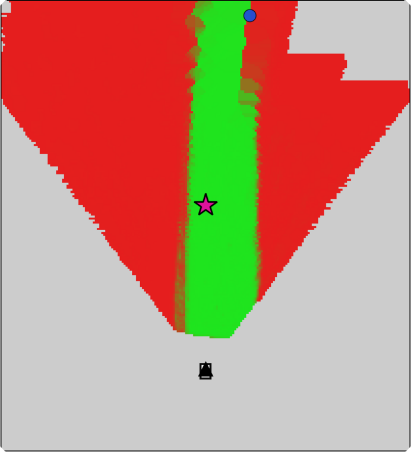
The same state is rebuilt online from RGB-D and odometry, so the video-trained policy transfers with no modification.
The map is accumulated causally: the map the robot sees at video time t contains only cells the camera had observed by t, never ground revealed later. On top of that state the simulator enforces the usual robot constraints —
Training is PPO from scratch, 32 parallel environments, at roughly 1,000 environment steps per second on one RTX 5090 — a 100 M-step run takes 26 hours.
Corpus
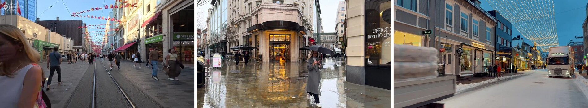
| Train | Test | |
|---|---|---|
| Source videos (distinct cities) | 25 (12) | 19 (17) |
| 20 s episodes extracted | 8,147 | 3,126 |
| Episodes passing gates | 6,075 | 2,155 |
| Hours of usable video | 33.8 | 12.0 |
| Pedestrian tracks | 91,261 | 29,846 |
| Tracks per episode (mean) | 15.0 | 13.8 |
| Pedestrians per frame (mean / max) | 2.5 / 18 | 2.3 / 18 |
| Frames with ≥ 1 pedestrian | 72% | 68% |
| Demonstrator path per episode (m) | 23.7 | 21.7 |
Result 1 — unseen videos
Closed-loop in the state-space simulator. The robot starts at the demonstrator's pose at t = 2 s and must reach a point at least 15 m ahead, among the recorded people.
| Success rate (95% Wilson interval) | 92.6% [91.4, 93.7] |
| Pedestrian collision | 3.7% |
| Static-obstacle collision | 1.9% |
| Timeout (18 s) | 1.8% |
| SPL | 0.860 |
| Path efficiency (shortest / traveled) | 0.928 |
| Time to goal (s) | 12.2 |
| Mean speed (m/s) | 1.28 |
| Time in personal zone (< 1.2 m) per episode (s) | 0.24 |
For scale: replaying the recorded camera trajectory itself — a real person walking that street — satisfies the same collision criteria in only 72% of episodes, with 21% pedestrian and 7% static collisions. The walker brushes past people far closer than the robot's rules allow.
Result 2 — the central claim
The simulator's main approximation is that pedestrians follow their recorded trajectories instead of reacting to the robot. If that were a serious limitation, a reactive model should train a better policy. It does not.
A street in Belgrade, from a video none of these policies has seen. Every clip is the same episode with the same deterministic start; only the training setup differs. Left panel is the policy's egocentric observation, right panel the world map with the path it took.
Reads the two approaching people early, arcs wide around them, and carries its speed through to the goal — 126 steps.
Trained against a learned predictor. Commits to a line between the two people and contacts one at step 88.
Trained against people who yield to the robot, so it holds course and expects them to move. They don't — step 81.
Same method, quarter of the corpus. Starts to turn far too late — fewer videos means fewer crowd configurations seen.
Supervised on the demonstrator's own motion, never trained closed-loop. Tracks the walked path straight into the pair.
Training on replay could simply be tuning a policy to a quirk of replay. So each policy is scored under all three pedestrian dynamics — the recorded replay, a social-force crowd, and a Trajectron++ crowd. A policy that only works in its own training dynamics would show a strong diagonal. The replay-trained policy is the best or tied-best in every column:
Trajectron++ matches replay without improving on it, and costs more to get there: it is an extra model that has to be trained (here from scratch on our own tracks, with no test video touching it) and it drops the simulator from about 1,000 steps/s to 800. Social force is clearly worse. Direct replay is the simplest of the three and the most robust.
If the recorded crowds are the source of the policy's competence, then adding videos should buy competence — and specifically it should buy pedestrian safety rather than general path quality. It does:
| Variant | Succ. ↑ | SPL ↑ | Ped. coll. ↓ | Stat. coll. ↓ | Pers. (s) ↓ |
|---|---|---|---|---|---|
| Control | 91.4 [90.1, 92.5] | 0.858 | 4.4 | 1.5 | 0.19 |
| IL only | 55.3 [53.2, 57.4] | 0.548 | 32.1 | 11.2 | 0.46 |
| PPO from IL initialization | 90.0 [88.6, 91.2] | 0.859 | 5.4 | 1.2 | 0.45 |
| No spawn jitter | 90.4 [89.1, 91.6] | 0.860 | 5.4 | 1.6 | 0.58 |
| 90° FOV map | 88.9 [87.5, 90.1] | 0.846 | 4.5 | 1.3 | 0.09 |
| Proxemics reward | 85.0 [83.4, 86.5] | 0.823 | 11.5 | 2.1 | 0.42 |
| Square-patch tokens | 89.7 [88.3, 90.9] | 0.855 | 5.4 | 1.9 | 0.39 |
| 25% training videos | 81.8 [80.1, 83.3] | 0.791 | 13.5 | 2.4 | 0.28 |
| 50% training videos | 88.2 [86.8, 89.5] | 0.834 | 5.0 | 0.9 | 0.24 |
| Social-force pedestrians | 75.6 [73.7, 77.4] | 0.738 | 21.1 | 1.6 | 0.44 |
| Trajectron++ pedestrians | 90.0 [88.7, 91.2] | 0.850 | 5.7 | 1.8 | 0.34 |
| Same episodes, pedestrians driven by social-force model | |||||
| Control | 93.4 [92.3, 94.4] | 0.872 | 1.8 | 1.5 | 0.18 |
| Social-force pedestrians | 88.7 [87.3, 89.9] | 0.859 | 7.6 | 1.4 | 0.59 |
| Trajectron++ pedestrians | 93.3 [92.1, 94.3] | 0.878 | 2.3 | 1.7 | 0.32 |
| Same episodes, pedestrians driven by Trajectron++ model | |||||
| Control | 91.9 [90.7, 93.0] | 0.866 | 4.1 | 1.5 | 0.20 |
| Social-force pedestrians | 75.5 [73.6, 77.2] | 0.738 | 21.8 | 1.3 | 0.46 |
| Trajectron++ pedestrians | 91.3 [90.0, 92.4] | 0.870 | 5.2 | 1.6 | 0.37 |
Succ. is success rate; Ped. coll. and Stat. coll. are pedestrian and static-obstacle collision rates; Pers. is time per episode within 1.2 m of a pedestrian. Brackets are 95% Wilson confidence intervals. All variants trained for 30 M steps.
Result 3 — independent benchmark
Arena / Isaac Sim, four UrbanVerse street scenes, 160 scripted scenarios with reactive social-force pedestrians. A Clearpath Jackal with an OAK-D camera navigates between goals 18–22 m apart. Our policy is dropped in at 10 Hz, unchanged.
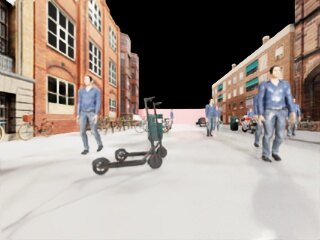
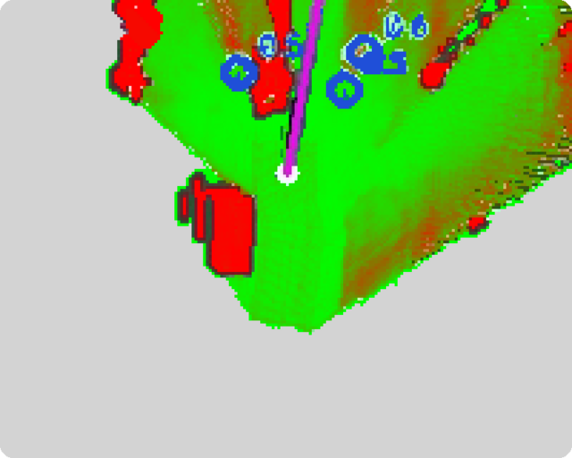
| Method | LiDAR | Plan | Succ. ↑ | Coll. ↓ (ped/wall) | T/O ↓ | Time ↓ | SPL ↑ | Pers. ↓ | Intim. ↓ |
|---|---|---|---|---|---|---|---|---|---|
| CrowdSurfer | ✓ | ✓ | 42.5 [35.1, 50.2] | 50.0 (47.5/2.5) | 7.5 | 46.2 | 0.418 | 19.9 | 1.9 |
| AttnGraph | — | ✓ | 35.0 [28.0, 42.7] | 45.6 (11.2/34.4) | 19.4 | 52.0 | 0.299 | 10.3 | 1.2 |
| HEIGHT | ✓ | ✓ | 75.0 [67.8, 81.1] | 25.0 (19.4/5.6) | 0.0 | 46.4 | 0.714 | 11.8 | 3.5 |
| Ours (SF people) | — | — | 58.1 [50.4, 65.5] | 41.9 (39.4/2.5) | 0.0 | 42.6 | 0.559 | 8.4 | 1.8 |
| Ours (Traj.++ people) | — | — | 70.0 [62.5, 76.6] | 25.0 (20.0/5.0) | 5.0 | 51.9 | 0.599 | 12.2 | 2.3 |
| Ours (replay) | — | — | 81.2 [74.5, 86.5] | 15.0 (13.8/1.2) | 3.8 | 46.2 | 0.747 | 10.6 | 2.1 |
Against HEIGHT, the strongest baseline, success improves by 6.2 points and collisions fall from 25.0% to 15.0% — both pedestrian contacts (13.8% vs. 19.4%) and wall contacts (1.2% vs. 5.6%). And the gap is not bought by timidity: our policy spends less time in the personal and intimate zones than HEIGHT while succeeding more often. It maintains progress through dense crowds, including the brief close passes that are normal in the recorded videos.
Result 4 — physical robot
No policy fine-tuning, no global map or planner. Traversability is built online from RGB-D and odometry; pedestrians are detected and tracked from LiDAR with a YOLO11 prior.
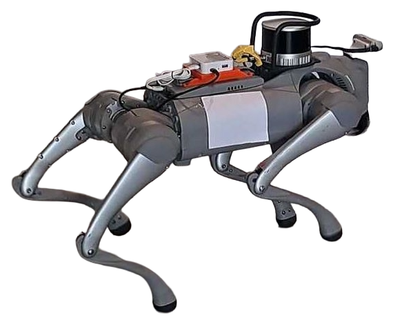
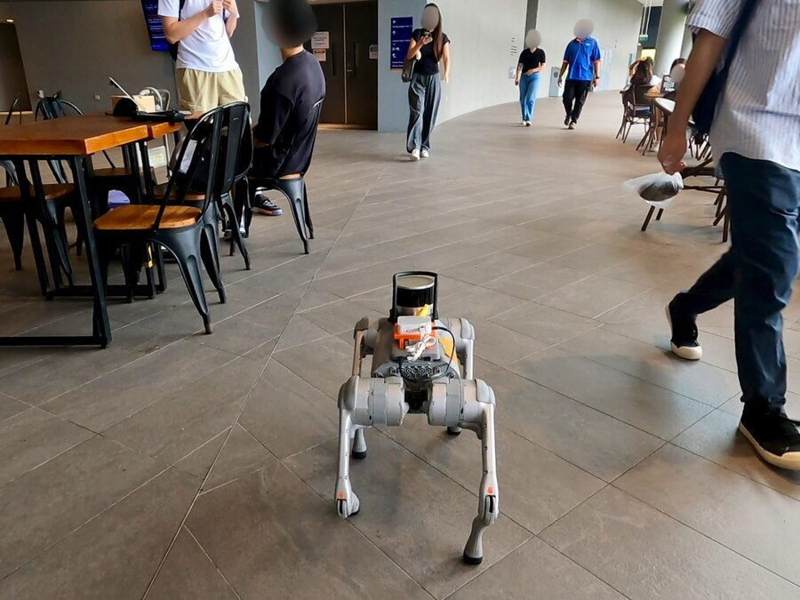
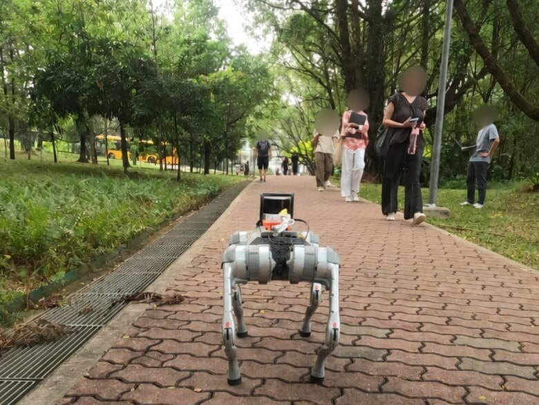
| Scene | Method | Success ↑ | Mean time (s) | Mean path (m) |
|---|---|---|---|---|
| Indoor | Nav2-MPPI | 5/10 | 28.6 | 9.64 |
| Ours (Trajectron++ people) | 7/10 | 32.1 | 10.96 | |
| Ours (replay) | 9/10 | 31.1 | 10.14 | |
| Outdoor | Nav2-MPPI | 3/10 | 18.9 | 7.74 |
| Ours (Trajectron++ people) | 8/10 | 16.1 | 8.29 | |
| Ours (replay) | 10/10 | 17.9 | 8.59 |
The failure mode of the baseline is instructive. MPPI treats a detected person as an occupied costmap cell, so it holds its course until someone is already close and then avoids late. Both learned policies receive pedestrian velocities, so they anticipate the encounter and slow or step aside before the crossing point. The replay-trained policy's single failure is indoors, where the 0.5 m/s hardware speed limit — far below the speeds it selects during training — leaves it too little time to clear an approaching person's path.
Limitations